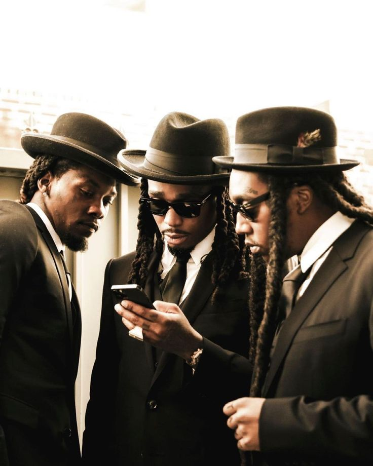

Migos was a highly influential American hip hop group formed in 2008 in Lawrenceville, Georgia. The trio fundamentally reshaped the sound of modern trap music and mainstream pop culture during the 2010s by popularizing their signature rapid-fire triplet flow and synchronized ad-libs. The group was comprised of three distinct rappers who grew up together:Quavo (Quavious Keyate Marshall) – Known for his melodic hooks and catchy, stadium-ready leadership. Offset (Kiari Kendrell Cephus) – Recognized for his explosive delivery, fast cadence, and lyrical versatility. Takeoff (Kirsnick Khari Ball) – The youngest member, widely praised for his surgical precision, deep voice, and intricate flows. Tragically, Takeoff passed away in November 2022.Key Career MilestonesThe Breakthrough: They first gained national attention with their 2013 viral hit "Versace", which famously received a remix from Drake.The Chart-Toppers: Their 2016 single "Bad and Boujee" (featuring Lil Uzi Vert) became a massive cultural phenomenon, reaching Number 1 on the Billboard Hot 100 and anchoring their Grammy-nominated, platinum-selling album Culture. The Sonic Legacy: Managed heavily by Coach K under Quality Control Music, they released a string of massive commercial hits including "T-Shirt," "Slippery," "Stir Fry," and "Walk It Talk It".